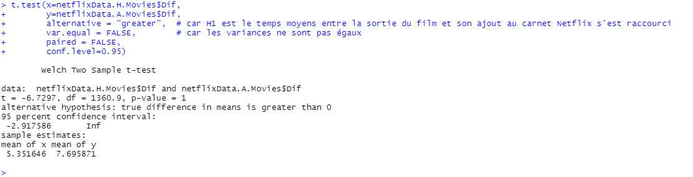
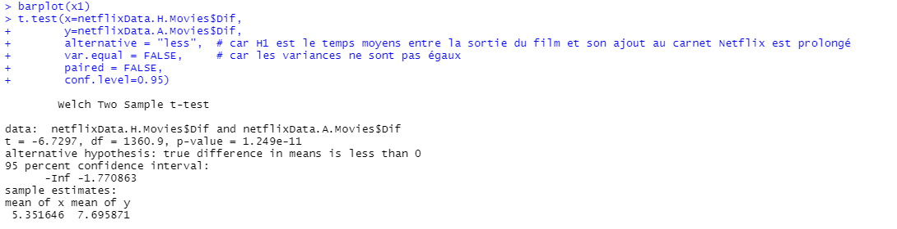
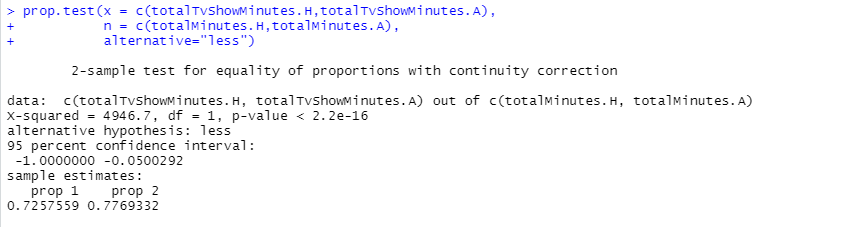

Netflix est un service de streaming vidéo qui dispose d'un catalogue varié de films et de séries. Nous avons accès aux données historiques du catalogue à l'adresse suivante : https://www.kaggle.com/shivamb/netflix-shows. Au cours de ce rapport, nous allons étudier quelques tendances et évolutions concernant le catalogue avec une analyse statistique.
L'équipe est composée de 3 membres, MianMian Shan, Sébastien Choisy et Rémi Dufeu. Nous avons conjointement réalisé l'ensemble des activités
Les données utilisées proviennent d'un fichier CSV. Ce sont donc des exports et non un accès direct à la base de donnée de la plateforme. Pour exploiter ce fichier avec R, nous utilisons la fonction suivante pour lire le fichier :read.csv('netflix_data.csv',TRUE,sep = ",")
Les données chargées, nous allons maintenant évaluer la qualité de celles-ci. Nous commençons donc par déterminer le nombre de données manquantes. Pour les colonnes qui nous intéressent pour notre étude à savoir : le type de contenu, la date d'ajout, la date de sortie, la durée (duration) et enfin la catégorie (la colonne listed_in). Nous évaluons le pourcentage de données vides et "NA" pour ces colonnes avec la formule suivante : missingDataForTypeColumn <- (sum(is.na(netflixData$type) | netflixData$type == "")/TotalRowNumber)*100Notre recherche a permis de conclure qu'il y avait peu de cases vides ou NA dans les colonnes (0,11% de vide pour la colonne date d'ajout et 0,3% pour la duration).
Vu le faible pourcentage, nous avons décidé de supprimer les lignes concernés car l'impact de celles-ci était de moins de 5%
Maintenant que nous avons extrait les données et évalué leur qualité, nous pouvons maintenant procéder au traitement. Au cours de cette étude nous avons séparé les données en deux parties : les données avant 2020 qui est l'historique (H) et la donnée de 2021 (A). netflixData.H <- subset(netflixData, substrRight(netflixData$date_added,4) < 2021) Vous pouvez retrouver l'ensemble de ces traitements dans le fichier "TraitementDesDonnées.R".
Concernant notre approche, nous avons réalisé des tests d'hypothèses avec les tests de Student. Cette méthodologie permet d'aller plus loin que de simplement comparer deux moyennes. En effet sur un échantillon de données réduit, il est possible que par la fruit du hasard, on observe des statistiques différentes que sur la série entière. Il est donc dangereux d'uniquement se servir d'une moyenne pour affirmer ou infirmer une hypothèse. Le test de Student prend en compte justement ce cas de figure.
Dans le cas de notre étude, nous avons comparé deux échantillions de données : les données avant 2021 nommées H et les données de 2021 notées A. Nous avons voulu déterminé si l'écart entre la sortie d'un film et sa date d'ajout sur la plateforme s'était réduit au fil du temps. En regardant les moyennes nous trouvons plutôt l'inverse en comparant 2021 avec les années antérieurs mais est-ce suffisant pour tirer une conclusion ? En adoptant une démarche scientifique nous constatons que 2021 peut être considéré comme une année parmis d'autres et donc ce n'est qu'un échantillon. Par le fruit du hasard et en fonction de la variance de ma série je ne peux pas déterminer avec exactitudes que 2021 soit représentatif de l'ensemble.
Pour répondre à notre question nous avons donc adopté l'approche de student en partant de l'hypothèse que la moyenne de 2021 est égale à celle des années antérieurs. En effet à ce stade rien ne nous indique que 2021 est une année particulière. Nous avons donc adopté cette méthodologie au cours de notre analyse pour affirmer ou infirmer nos hypothèses.
Le langage R dispose de fonction pour réaliser des tests d'hypothèses que nous avons utilisé lors de notre étude. La fonction t.test ci dessous permet de tester un échantillion avec la méthodologie de student. t.test(x=netflixData.H.Movies$Dif, y=netflixData.A.Movies$Dif, alternative = "greater", var.equal = FALSE, paired = FALSE, conf.level=0.95) Nous testons dans la fonction ci dessus les échantillons de 2021 (A) et l'échantillion avant 2021 (H) pour un taux de confiance de 95%. Nous avons mis "greater" dans la propriété alternative car l'hypothèse alternative est que l'écart se réduit et donc que la différence pour l'échantillon H soit plus grande que celle de l'échantillon A.
Pour répondre à cette question nous avons commencé par analyser brièvement nos statistiques.
Si nous regardons les graphiques nous remarquons que l'écart entre la sortie du film et son ajout au catalogue est dans la plupart des cas plutôt court. Les données de 2021 et des données historiques semblent avoir une distribution similaire à première vue.
Concernant la moyenne d'écart entre la sortie du film et son ajout du catalogue, on remarque que la moyenne de 2021 est supérieure. Si on prend en considération seulement la moyenne on peut dire que le temps moyen entre la sortie s'est donc allongé.
La moyenne n'est pas une donnée suffisante pour valider ou réfuter une hypothèse puisque 2021 n'est qu'un échantillion. Pour pouvoir tirer une conclusion nous devons prendre en considération le hasard lié à la taille de l'échantillion et à la distribution. Nous réalisons donc un test d'hypothèse.
t.test(x=netflixData.H.Movies$Dif, y=netflixData.A.Movies$Dif, alternative = "greater", var.equal = FALSE, paired = FALSE, conf.level=0.95)
Résultat : La p-valeur est > 0,05, donc on ne peut pas rejeter H0 que le temps moyen entre la sortie du film et son ajout ne change pas pour les années avant 2021 et en 2021.
Avec les données actuelles nous ne pouvons pas réfuter notre hypothèse. Notre hypothèse reste donc privilégiée, le temps entre la sortie d'un film et son ajout au catalogue ne se rallonge donc pas.
Si nous regardons notre test d'hypothèse précédent, nous avons pris comme hypothèse alternative que l'écart se réduisait au fil des années. Or si nous regardons la moyenne des deux séries, l'inverse est plus plausible. Prenons alors l'hypothèse que l'écart se rallonge : t.test(x=netflixData.H.Movies$Dif, y=netflixData.A.Movies$Dif, alternative = "less", var.equal = FALSE, paired = FALSE, conf.level=0.95)
La p-valeur est < 0,05, donc on rejète H0 que le temps moyen entre la sortie du film et son ajout ne change pas pour les années avant 2021 et en 2021. La moyenne entre la sortie en salle et sur netflix avant 2021 est donc inférieure à la moyenne entre la sortie en salle et sur Netflix en 2021
Regardons la répartition des films et séries dans nos deux séries.
Nous remarquons qu'à priori il y a d'avantage de séries sorties dans le catalogue en 2021 que dans les années antérieures. Réalisons un test d'hypothèse pour vérifier cette observation : prop.test(x = c(nb.TVShow.H, nb.TVShow.A), n = c(nb.total.H, nb.total.A), alternative = "less")
La p-valeur est 0,001174 < 0,05 donc on rejète hypothèse nulle que la proportion de TV Show est identique avant 2021 et en 2021. La proportion de TV Show a augmenté en 2021 par rapport à avant 2021
Regardons la répartition des films et séries dans la totalité du contenu du catalogue.
Il y a 72.6% de TvShows et 27.4% de Movies avant 2021 en minutes. Il y a 77.7% de TvShows et 22.3% de Movies en minutes en 2021. Regardons maintenant si cette différence de 5% est le fruit du hasard avec un test : prop.test(x = c(totalTvShowMinutes.H,totalTvShowMinutes.A), n = c(totalMinutes.H,totalMinutes.A), alternative="less")
La p-valeur est 2.2e-16 < 0,05 On peut donc rejeter l'hypothèse nulle que la proportion de TV Show en minutes reste identique avant 2021 et en 2021. La proportion de film a donc baissé en termes de durée de contenu.